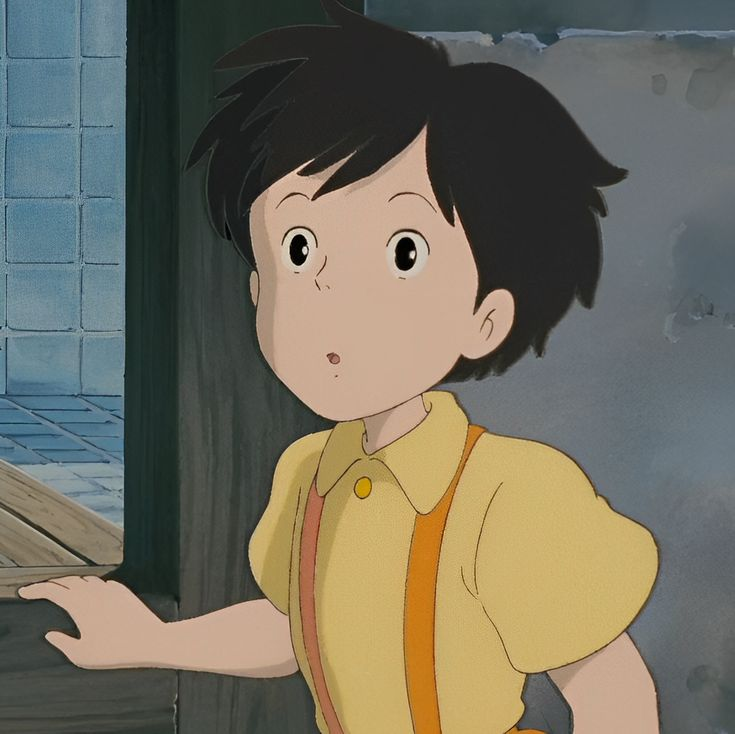
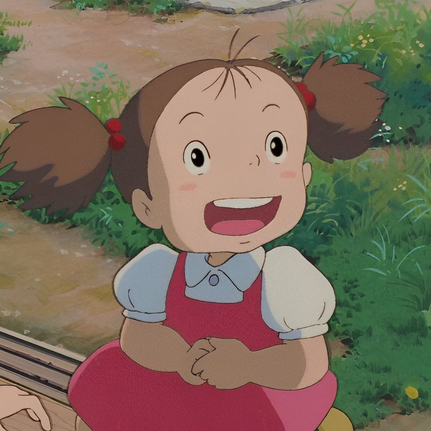
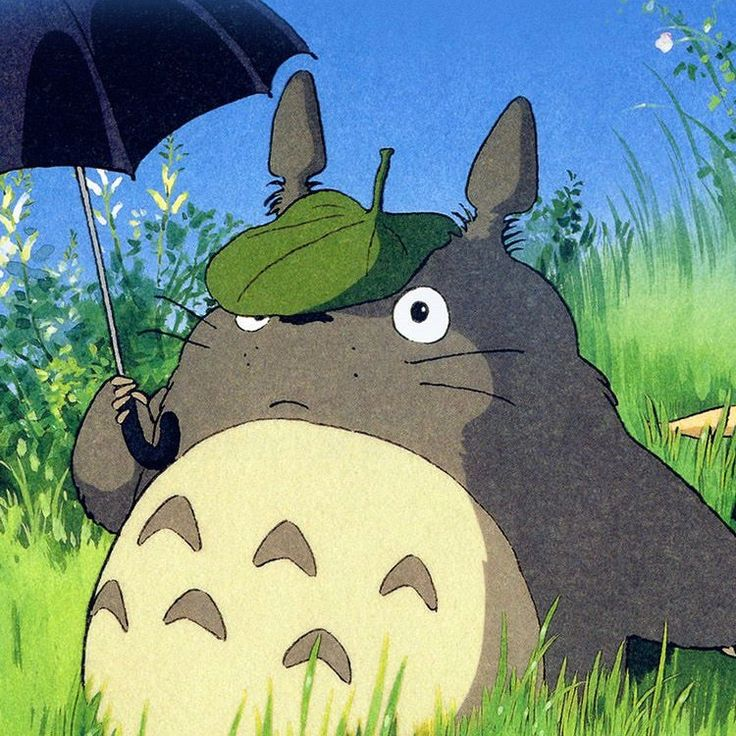

Satsuki:
representa o equilíbrio entre a infância e a responsabilidade.
Ela está em um momento de transição na vida, onde ainda preserva a imaginação infantil,
mas já começa a enfrentar desafios mais adultos. Sua jornada no filme é tanto externa
(interagir com Totoro e buscar Mei) quanto interna, ao lidar com seus próprios sentimentos
de insegurança e esperança.

Mei Kusakabe:
Mei é o lado mais puro e desprotegido da infância.
Enquanto Satsuki equilibra o mundo infantil e as responsabilidades crescentes,
Mei permanece inteiramente no reino da infância.
Sua ligação com Totoro e os seres mágicos
é um lembrete da capacidade das crianças de se conectarem com a
fantasia sem preconceitos

Totoro:
Totoro é frequentemente interpretado como um espírito da floresta ou uma personificação da natureza.
Ele simboliza harmonia, equilíbrio e a conexão entre humanos e o mundo natural.
Sua presença é calmante e reconfortante, ajudando as irmãs a lidarem com os desafios emocionais que enfrentam,
como a ausência prolongada da mãe, que está hospitalizada.